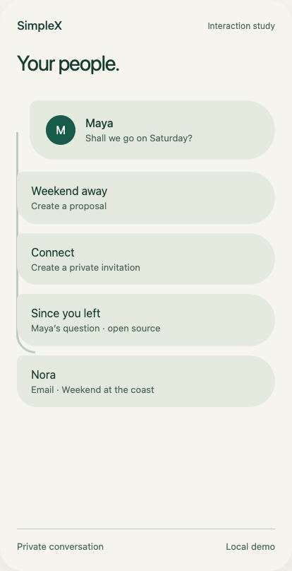
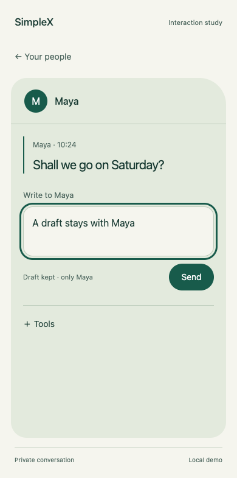

Keep the whole coherent.
Preserve the relationship and your place as the workspace changes.

Preserve the relationship and your place as the workspace changes.
Let the active region adapt locally around its task.
Attach a discussion to the part of an object that matters.
I wanted the mobile chat menu to be organised, clean to the eye, generous with space and forward-looking. The first attempts looked familiar: new surfaces around the same old navigation.
That made me ask harder questions. What makes this innovative? What considerations are we making? Why should this feel like 2028?
The person's conversation should have the greatest presence.
The date is a horizon for exploration. The work is to make communication clearer, calmer and more capable.
Jony Ive's work prompted five questions for this project: have we solved the complexity, designed the whole journey, understood the material, cared for the unnoticed details and allowed usefulness to guide form?
We cannot know what he would think of the concept. We can use those questions to challenge it. Every curve and every movement needs a reason.
That includes the less glamorous moments: the interrupted draft, the failed send, the unanswered invitation and the return to a conversation after time away.
These are design hypotheses. Each one needs a concrete experience and a way to test it.
A view of current proposals, open questions and shared objects, with the original messages available behind it.
Touch an object and useful controls unfold beside it. Finish and they recede.
A photograph holds the replies about its details, so the conversation stays attached to what people mean.
Before sharing, see the audience, the content and the boundary. Joining and agreeing remain separate.
Return through a meaningful source message. Preserve your place and your draft without demanding constant attention.
I wanted to move outside the standard model and draw from good design in nature. The octopus offered a different way to think about form, sensing, action and visibility.
Its flexible arms, extensive neural circuitry and changing surface became questions for the interface. The biological observations are sourced; the design mappings are our interpretations.
Let the selected region become the workspace while retaining its origin.
Reveal what is useful beside the image, message or object being handled.
A reply can belong to a window in a photograph, rather than an unrelated line in a transcript.
Change emphasis with the moment. Preserve readable names and essential navigation.
Biology: University of Chicago · Smithsonian Ocean. These are functional analogies. Evolution is not a ladder; “many brains” is shorthand, and social behaviour is not our premise for group design.
A relationship remains recognisable as it opens into a conversation. A photograph expands into a shared surface. Tools emerge locally. Leaving restores context.
Shallow relief, readable type and generous space give the content room. Contours should explain an audience; movement should explain a transition.
The rectangular phone is a constraint we can work with. Fluidity has to come from adaptive behaviour.
We start by explaining the anatomy. Now rewind to the early sketches and follow the actual visual progression: what we asked, what we tried, why it fell short and what came next.
All nine boards are preserved. The working studies follow them, with their limits stated. Open the complete concept library or read the iteration record.
Question: Could we reduce attention pressure?

Response: Prioritised replies, grouped spaces and previews.
Critique: The appearance changed more than the interaction model.
Next: Simplify the structure and remove visual ego.
Question: What does organised and clean mean?

Response: Quiet typography, open space and clearer grouping.
Critique: Still a familiar messaging model.
Next: Look outside the standard model and learn from nature.
Question: Can nature change the organisation?

Response: Shorelines for attention, branches for topics, gathering around an object.
Critique: No single anatomical model unified the experience.
Next: Explore octopus flexibility, local sensing and selective visibility.
Question: Can capability appear where we touch?

Response: A conversation unfolds locally, then returns to the overview.
Critique: The anatomical connection was still too hard to see.
Next: Translate centre, arms and contact points explicitly.
The anatomy board at the start of this page belongs here in the creation record. It made the mapping explicit; the next step was to test a complete journey. Return to that board.
Question: Does the idea cover the entire flow?

Response: Invites, messages, photos, anchored replies and a plan.
Critique: The sequence still relied on conventional separate screens.
Next: Explore continuous form and movement.
Question: Can the surface reach, unfold and settle?

Response: A sculptural membrane changes around the activity.
Critique: Navigation, thumb reach and the behaviour behind the shape need testing.
Next: Map five predictions to concrete designs.
Question: How does each prediction become a design?

Response: Five behaviours share one visual family.
Critique: Curves need useful jobs; invitation and participant cues need correction.
Next: Connect the behaviours through one story.
Question: Can the relationship persist through the story?

Response: Invite, accept, write, choose, send, touch, gather and return.
Critique: The screens still need continuity beyond their appearance.
Next: Build opening and closing, then photo and sharing interactions.
The working study opens Maya's conversation from the home surface, preserves a draft, unfolds photo tools and lets you attach a reply to an image. It also explores scoped invitations, joining a plan, deciding on a date and returning to a source message.


Follow the full visual progression: anatomy → V2 → unfolding ↗
Chat lists, QR invitations, contextual profiles, verification and group roles in the approved white palette with subtle blue surfaces and neutral lettering.
Explore the five new designsSeven conversations, multiple message previews, search and All / Unread / Groups filters. Open one relationship in place, switch without losing drafts, and keep the surrounding list visible.
Try the new menu conceptStart with the coordinating centre and its paths. Open Maya into one bounded, scrolling arm; write, unfold local photo tools and return with your draft intact. Other paths explore invitations, shared plans and email.
Try the revised anatomy studyFictional participants. All sending and acceptance are simulated locally. Explore the structural screen layouts and wireframes.
Read the prototype audit and revision decisions · Compare the previous combined study.
The original study from the screenshot: touch Maya, keep a draft, close and reopen.
The same surface adds local tools, explicit image review and anchored replies.
Source messages become a plan. This historical study automatically simulates acceptance; it predates the separate membership decisions in the combined flow.
Explore all five working studies with previews.
Email is a future integration scenario. A relationship can organise both channels, while the interface makes the actual sender, recipient and channel clear. Ordinary email retains its own privacy properties.
The concept grew stronger when we admitted that organic outlines alone did not resolve the experience.
These are invitations to contribute. A clear finding or a rough alternative can move the work forward.
Read the current critique ↗I want passionate designers, researchers and builders to challenge these assumptions, add their own ideas and help make the experience work.
Bring a sketch, a motion study, a useful observation, an accessibility finding or a small working interaction. Start with one problem. Show what improves for the person using it.
Explore alternatives to the vertical stack while keeping names stable and a route to many conversations.
Preserve the real origin, keyboard context and draft through writing, choosing and cancelling.
Make anchored replies work with zoom, different aspect ratios and accessible text navigation.
Test whether people distinguish invitation, membership and agreement.
Explore chat and email without obscuring who receives the reply or how it travels.
simplex.chat is our first design case. This project is unaffiliated with SimpleX or Jony Ive and is not an official roadmap. Real integration needs the maintainers' input. Visit SimpleX.
The concepts were developed through a conversation with AI assistance. The nine visual boards are AI-generated explorations; two preserved prompts and editable prototype source are included in the repository; exact prompts for the earlier seven boards are unavailable. No user-study results or production security guarantees are claimed.
Read the project narrative, including the predictions, inspirations, evolution of the concept and the invitation to contribute.